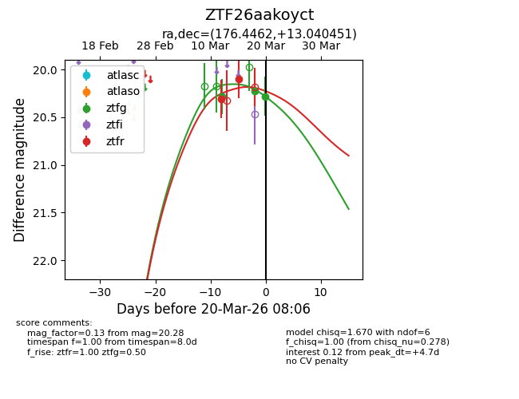
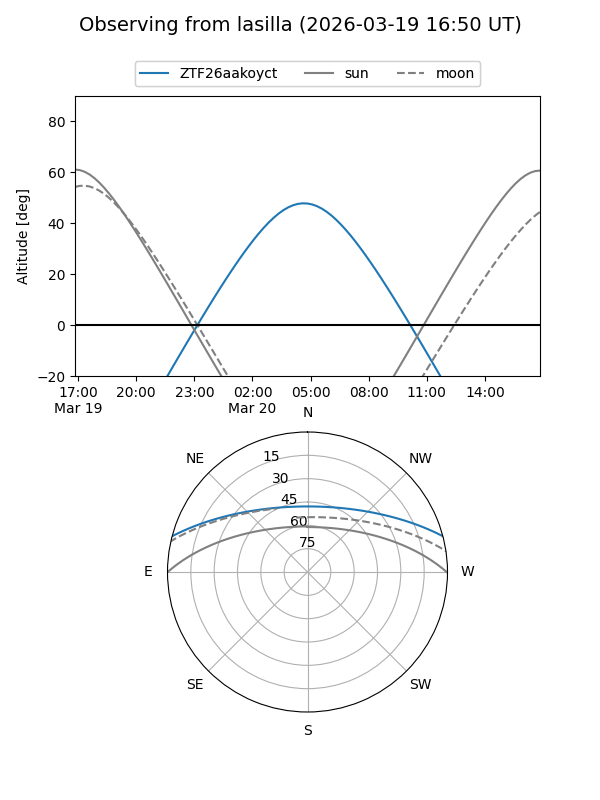
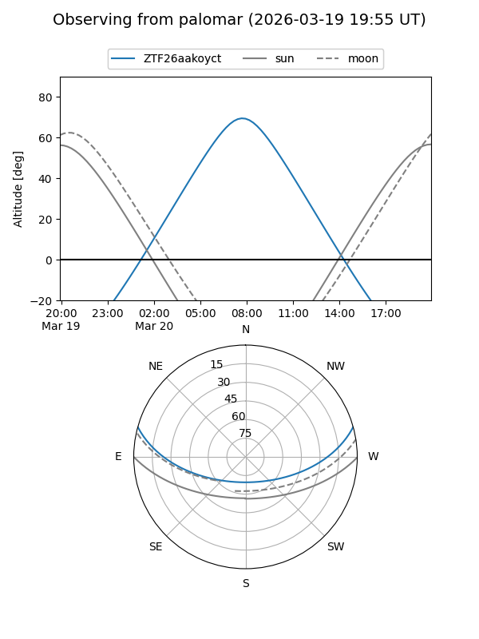
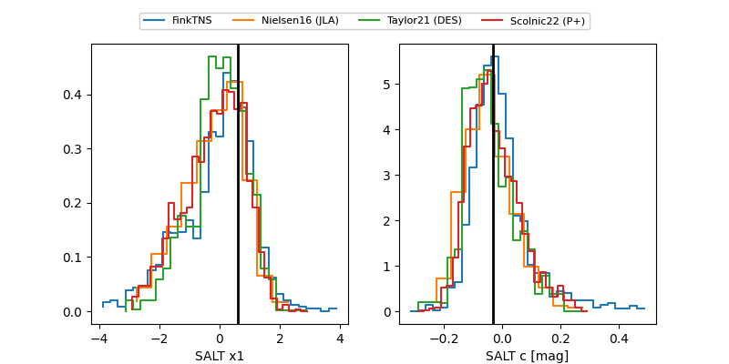

ZTF26aakoyct
Target ZTF26aakoyct at 2026-03-20 08:08
Aliases and brokers:
FINK: link
Lasair: link
ALeRCE: link
alt names
ZTF26aakoyct (ztf,fink_ztf)
Coordinates:
equatorial (ra, dec) = 176.4462,+13.04045
equatorial (HMS+DMS) = 11:45:47.09,+13:02:25.63
galactic (l, b) = (252.2313,+69.16216)
Flags:
Photometry:
last ztfg=20.28, ztfr=20.10
3 ztfg, 2 ztfr detections
Lightcurve

Visibility


Additional plots
